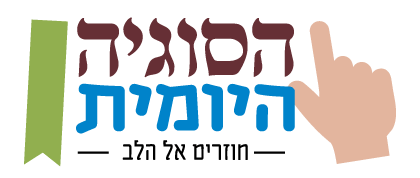
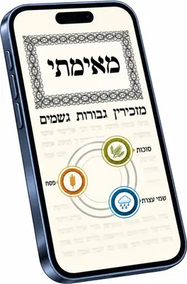

<!DOCTYPE html>
<html lang="he" dir="rtl">
<head>
<meta charset="UTF-8">
<meta name="viewport" content="width=device-width, initial-scale=1.0, viewport-fit=cover">
<meta name="color-scheme" content="only light">
<title>הדף השבועי של בני עקיבא</title>
<link rel="icon" href="icon-192.png">
<meta name="theme-color" content="#0E2E63">
<!-- ============================================================
     עמוד הבחירה — "פתיחת הדף" במסך התלמיד, כשעמוד הביניים דלוק
     (ניהול ← מה מוצג · `rows.mid`). 8.99.431, החלטת אחיאסף.
     ============================================================
     אותו מסך בדיוק כמו `#week=` שבעמוד הראשי — אותם כרטיסים, אותה
     תחתית, אותו מתג ואותם מפתחות אחסון (wkKeep / wkPick) — אבל בלי
     לטעון את כל העמוד הראשי (25 אלף שורות) בדרך לדף.

     העיצוב הוא העתק של הכללים מ-index.html ("מסך שבוע"). מי שמשנה
     שם — משנה גם כאן. המלל — UI.wk* ב-data.js, אותם מפתחות בשני העמודים.

     הצוות לא עובר כאן: הבית של הרכז, המסלול השנתי והניהול ממשיכים
     לפתוח את המסך שבתוך העמוד הראשי.
     ============================================================ -->
<style>
html,body{touch-action:manipulation;overflow-x:clip;overscroll-behavior-x:none}
:root{
  color-scheme:only light;
  --blue:#17468F; --blue-d:#0B2550; --blue-l:#3574CE; --cyan:#29ABE2;
  --green:#6FA83B; --green-d:#467B1A; --green-2:#3A6615;
  --gold:#C08F2B; --gold-l:#E5B854;
  --gold-t:#8C681F;
  --paper:#F6F1E6; --surface:#FFFDF8; --surface-2:#F7F1E4; --sunk:#EFE6D3;
  --ink:#1B2A45; --ink-2:#5A6780; --ink-3:#5C687E;
  --rule:#E5DAC3; --rule-2:#EFE7D7;
  --ok:#3A7B56; --warn:#A87A1C; --stop:#A5382D;
  --r:14px; --r-m:14px; --r-s:10px;
  --sh-1:0 1px 2px rgba(37,29,12,.05), 0 2px 8px rgba(37,29,12,.05);
  --sh-2:0 2px 4px rgba(37,29,12,.06), 0 10px 26px rgba(37,29,12,.08);
  --sh-3:0 10px 40px rgba(11,37,80,.20);
  --pat:rgba(23,70,143,.05);
}
*{box-sizing:border-box;margin:0;padding:0;
  font-family:system-ui,-apple-system,"Segoe UI",Roboto,sans-serif}
img:not([src]){visibility:hidden}
html,body{overflow-x:hidden}
@supports (overflow-x:clip){html,body{overflow-x:clip}}
img{max-width:100%}
body{background:var(--paper);
     background-image:radial-gradient(120% 60% at 50% 0%,#FBF7EF 0%,transparent 60%);
     background-repeat:no-repeat;
     color:var(--ink);min-height:100vh;line-height:1.55;
     -webkit-font-smoothing:antialiased}
.app{display:block;width:100%;max-width:580px;margin:0 auto;min-height:100vh;
     position:relative;background:transparent}
.content{padding:0 14px 26px}
.view{display:none;gap:12px}
.view.on > *{min-width:0}
.view.on{display:grid;grid-template-columns:minmax(0,1fr);animation:rise .26s cubic-bezier(.34,1.4,.5,1)}
@keyframes rise{from{opacity:0;transform:translateY(9px) scale(.995)}to{opacity:1;transform:none}}
@media (prefers-reduced-motion:reduce){*{animation:none!important;transition:none!important}}
.back{background:none;border:none;color:var(--ink-3);font-size:.87rem;font-weight:800;
  cursor:pointer;padding:3px 0;text-align:start;align-self:flex-start}

.wk-cards{display:grid;gap:16px;margin:30px 14px 0}
.wcard{display:flex;align-items:center;gap:14px;width:100%;background:var(--surface);
  border:0;border-radius:22px;padding:14px 18px;min-height:118px;box-shadow:var(--sh-1);
  text-decoration:none;color:var(--ink);font:inherit;text-align:start;cursor:pointer;
  transition:transform .15s}
.wcard:active{transform:scale(.99)}
.wcard.dim{opacity:.55;cursor:default}
.wc-pic{width:70px;height:104px;object-fit:contain;flex:none;mix-blend-mode:multiply}
.wc-t{flex:1;font-weight:800;font-size:1.25rem;letter-spacing:-.02em;line-height:1.25}
.wc-t.sm{font-size:.95rem;color:var(--ink-2)}
.wc-t small{display:block;font-size:.8rem;font-weight:600;color:var(--ink-3);margin-top:3px;letter-spacing:0}
.wc-go{width:20px;height:20px;flex:none;color:var(--ink-3)}
.wc-logo{flex:1;display:flex;justify-content:center}
.wc-logo img{display:block;width:100%;max-width:250px;height:auto}
.wcard.small{min-height:0;padding:14px 18px}
.wcard.small .wc-t{font-size:1.02rem}
.wk-quiz{display:flex;align-items:center;justify-content:center;gap:9px;width:min(80%,300px);
  margin:32px auto 0;padding:17px 20px;border:0;border-radius:999px;cursor:pointer;
  background:linear-gradient(180deg,#4E8B22,#2F6512);color:#fff;font:inherit;font-weight:800;
  font-size:1.12rem;box-shadow:0 8px 20px rgba(47,101,18,.28)}
.wk-quiz:active{transform:scale(.98)}
.wk-quiz svg{width:21px;height:21px;fill:currentColor;flex:none}
.wk-keep{display:flex;align-items:center;justify-content:space-between;gap:14px;
  margin:30px 14px 0;font-size:.95rem;font-weight:800;color:var(--ink-2)}
.wk-keep small{display:block;font-size:.78rem;font-weight:600;color:var(--ink-3);margin-top:2px}
.wk-foot{margin:56px 0 6px;padding-top:18px;border-top:1px solid var(--rule);text-align:center;
  font-size:.86rem;font-weight:600;color:var(--ink-3);line-height:1.95}
.wk-foot a{color:var(--blue);text-decoration:none}
.wc-logo img.wc-ym{width:auto;max-width:100%;height:88px}

.wtop{display:flex;justify-content:space-between;align-items:center;gap:12px;
  background:var(--surface);border-radius:var(--r);padding:15px;box-shadow:var(--sh-2)}
.wtop .k{font-size:.73rem;font-weight:800;color:var(--ink-3);letter-spacing:.06em}
.wtop h2{font-size:1.3rem;font-weight:800;letter-spacing:-.032em;line-height:1.2;margin:3px 0}
.dafbig{width:58px;height:58px;border-radius:50%;color:#fff;flex:none;display:flex;
  align-items:center;justify-content:center;font-size:1.4rem;font-weight:800;
  box-shadow:var(--sh-2)}
.t-b .dafbig{background:linear-gradient(150deg,var(--blue-l),var(--blue))}
.t-g .dafbig{background:linear-gradient(150deg,var(--green),var(--green-d))}

.sw{width:46px;height:27px;border-radius:20px;background:var(--rule);border:none;
  position:relative;cursor:pointer;flex:none;transition:background .2s}
.sw:after{content:"";position:absolute;top:3px;inset-inline-start:3px;
  width:21px;height:21px;border-radius:50%;background:#fff;
  transition:inset-inline-start .22s cubic-bezier(.34,1.4,.5,1);
  box-shadow:0 1px 3px rgba(0,0,0,.2)}
.sw.on{background:var(--green)}
.sw.on:after{inset-inline-start:calc(100% - 24px)}
</style>
</head>
<body>
<div class="app">
  <main class="content">
    <div id="v-week" class="view on">
      <button class="back" onclick="backToTrack()"></button>
      <div id="week-body"></div>
    </div>
  </main>
</div>

<script src="a11y.js"></script>
<script src="data.js"></script>
<script src="testmode.js"></script>
<script src="deck.js"></script>
<script src="textedit.js"></script>
<script src="learned.js"></script>
<script src="links.js"></script>
<script>
/* ---------- אחסון — אותם מפתחות של העמוד הראשי (`df:`) ---------- */
var Store = {
  get: function (k, d) {
    try { var v = localStorage.getItem('df:' + k);
          return v === null ? (d === undefined ? null : d) : JSON.parse(v); }
    catch (e) { return d === undefined ? null : d; }
  },
  set: function (k, v) { try { localStorage.setItem('df:' + k, JSON.stringify(v)); } catch (e) {} },
  del: function (k) { try { localStorage.removeItem('df:' + k); } catch (e) {} }
};
function esc(s) {
  return String(s == null ? '' : s).replace(/[&<>"']/g, function (c) {
    return { '&':'&amp;','<':'&lt;','>':'&gt;','"':'&quot;',"'":'&#39;' }[c];
  });
}
function fill(tpl, vars) {
  return String(tpl).replace(/\{(\w+)\}/g, function (m, k) { return vars[k] != null ? vars[k] : m; });
}

/* ---------- ההגדרות — אותן שכבות של העמוד הראשי ----------
   מה שפורסם (`cfgCache`, נשמר גם במסך התלמיד), ומעליו הטיוטה
   שבמכשיר (`cfg`). אין קריאה לגיליון: מסך התלמיד קרא אותו רגע
   לפני הלחיצה, והעמוד הראשי גם הוא צייר את המסך הזה מהמטמון. */
var CFG = Store.get('cfg', {}) || {};
var PUB_CFG = Store.get('cfgCache', {}) || {};
var PUB_DEEP = { rows:1, joined:1, sugya:1, prices:1 };
function CV(k) {
  var pub = PUB_CFG[k], loc = CFG[k];
  if (!PUB_DEEP[k]) return loc != null ? loc : pub;
  if (pub == null && loc == null) return null;
  var out = {}, a;
  if (pub) for (a in pub) out[a] = pub[a];
  if (loc) for (a in loc) out[a] = loc[a];
  return out;
}
(function () {
  var sg = CV('sugya');
  if (sg) for (var t in sg) {
    var dp = (SUGYA[t] && SUGYA[t].pages) || {}, sp = sg[t] && sg[t].pages;
    if (sp) for (var pk in dp) if (/:$/.test(pk) && sp[pk] == null) sp[pk] = dp[pk];
    SUGYA[t] = sg[t];
  }
})();
/* המלל שפורסם: מסך התלמיד שומר אותו ב-`txtCache`, העמוד הראשי ב-`textCache`. */
(function () {
  var t = Store.get('txtCache', null);
  if (!t || !Object.keys(t).length) t = Store.get('textCache', null) || {};
  TX.layer(t, TX.draft());
})();

var INTER_PUBLIC = true;
var ROW_DEF = { inter:true, sugya:true, daf:false, chav:false, soon:false, mid:false, yomi:false };
var DEMO = /[?&]demo=1\b/.test(location.search);
function showRow(k) {
  if (DEMO) return true;
  var v = (CV('rows') || {})[k];
  return v == null ? (k === 'inter' ? INTER_PUBLIC : ROW_DEF[k]) : !!v;
}

function trackById(id) { return TrackById(id); }
function dafKey(d) { return String(d).replace(/["'׳״\s]/g, ''); }
function rowDaf(row) { return row && row[2] ? row[2] + LAmMark(LAmOf(row)) : ''; }
function sugKey(row) { return dafKey((row && row[2]) || '') + (LAmOf(row) === 2 ? ':' : ''); }
function sugHref(id, row) {
  var sg = SUGYA[id] || {}, sgp = (sg.pages || {})[sugKey(row)] || (sg.pages || {})[dafKey(row[2])];
  if (sgp && sgp.length === 2 && (sg.books || {})[sgp[0]]) return sg.books[sgp[0]] + sgp[1] + '/';
  if (sgp && sg.base && sg.fmt) return sg.fmt.replace('{p}', sgp);
  return sg.base || '';
}

/* ---------- הכתובת ----------
   `?st=1&inst=…&for=dad&show=1#week=<מסלול>-<שבוע>` — אותה צורה
   שמסך התלמיד שלח לעמוד הראשי. הפרמטרים נוסעים הלאה לדף, לחידון
   ולמסלול, כדי שכל חזרה תגיע למסך הנכון. */
var WM = /^#week=([a-z]+(?:-[a-z]+)?)-(\d+)$/.exec(location.hash || '');
var WK = { id:'', i:0 };
function instQ() {
  var m = /[?&]inst=([^&#]*)/.exec(location.search);
  return m && m[1] ? '&inst=' + m[1] : '';
}
function stuDadQ() {
  if (!/[?&]for=dad\b/.test(location.search)) return '';
  return '&for=dad' + (/[?&]show=1\b/.test(location.search) ? '&show=1' : '');
}
function fromQ() { return instQ() + stuDadQ(); }
/* ההקרנה (`show=1`) נוסעת גם בלי הורה — כמו appUrl ב-join. */
function appQ() {
  return '?st=1' + instQ() +
         (/[?&]for=dad\b/.test(location.search) ? '&for=dad' : '') +
         (/[?&]show=1\b/.test(location.search) ? '&show=1' : '');
}
/* "יציאה" מהדף חוזרת לכאן (learn.html, `ret=pick-…`). */
function retQ() { return '&ret=pick-' + WK.id + '-' + (WK.i + 1); }
function backToTrack() { location.replace('index.html' + appQ() + '#track=' + WK.id); }
function joinUrl() {
  var q = fromQ();
  return 'join.html' + (q ? '?' + q.slice(1) : '');
}

/* ---------- "זכרו את הבחירה" — ראו index.html ---------- */
function wkKeepOn() { return Store.get('wkKeep') === 1; }
function wkKeepToggle(b) {
  var on = !wkKeepOn();
  if (on) Store.set('wkKeep', 1); else { Store.del('wkKeep'); Store.del('wkPick'); }
  b.className = 'sw' + (on ? ' on' : '');
  b.setAttribute('aria-checked', on ? 'true' : 'false');
}
function wkPick(k) { if (wkKeepOn()) Store.set('wkPick', k); }
function notYet() { SayMsg(UI.wkNotYet); return false; }
/* החידון והמדריך ליומי יושבים בעמוד הראשי — שם הם נפתחים. */
function openQuiz() { location.href = 'index.html' + appQ() + '#quiz=' + WK.id + '-' + (WK.i + 1); }
function yomiCard() {
  if (Store.get('yomiSkip') === 1 && UI.yomiUrl) window.open(UI.yomiUrl, '_blank', 'noopener');
  else location.href = 'index.html' + appQ() + '#yomi=' + WK.id + '-' + (WK.i + 1);
}

/* ---------- המסך — העתק של openWeek ב-index.html ---------- */
function openWeek(id, i) {
  var tr = trackById(id);
  WK.id = id; WK.i = i;
  var bid = TrackBase(id);
  var row = tr.cal[i], key = DeckKeys(id, i + 1)[0] || id + '-' + (i + 1);
  var q = QUIZ[key];
  var tone = bid === 'taanit' ? 't-b' : 't-g';
  var lk = (DAF_LINKS[bid] || {})[dafKey(row[2])] || [];

  var h = '<div class="' + tone + '"><div class="wtop">' +
          '<div><div class="k">' + esc(fill(UI.wkMas, { m:tr.masechet })) + ' · ' + esc(row[1]) + '</div>' +
          '<h2>' + esc(DeckTitle(id, i + 1) || fill(UI.wkDafT, { d:rowDaf(row) })) + '</h2>' +
          '<div class="k" style="font-weight:600">' + esc(row[0]) + '</div></div>' +
          '<span class="dafbig">' + esc(rowDaf(row)) + '</span></div></div>';

  var sgHref = sugHref(bid, row);
  var go = '<svg class="wc-go" viewBox="0 0 20 20" aria-hidden="true"><path d="M12.5 4.5L7 10l5.5 5.5" ' +
           'fill="none" stroke="currentColor" stroke-width="2.2" stroke-linecap="round" stroke-linejoin="round"/></svg>';
  var card = function (href, cls, inner, pick) {
    return href
      ? '<a class="wcard ' + cls + '" href="' + href + '" target="_blank" rel="noopener"' +
        (pick ? ' onclick="wkPick(\'' + pick + '\')"' : '') + '>' + inner + go + '</a>'
      : '<a class="wcard dim ' + cls + '" href="#" onclick="return notYet()">' + inner + '</a>';
  };
  h += '<div class="wk-cards">' +
       '<div id="w-inter"></div>' +
       (showRow('sugya')
         ? card(sgHref, 'logo sug', '<span class="wc-logo"></span>', 'sugya')
         : '') +
       (bid === 'megila' && showRow('yomi')
         ? '<button class="wcard" onclick="yomiCard()"><span class="wc-logo">' +
           '</span>' + go + '</button>'
         : '') +
       (showRow('daf')  ? card(lk[0], 'small', '<span class="wc-t">' + esc(UI.wkPrint) + '<small>' + esc(UI.wkPrintSub) + '</small></span>') : '') +
       (showRow('chav') ? card(lk[1], 'small', '<span class="wc-t">' + esc(UI.wkChav) + '<small>' + esc(UI.wkChavSub) + '</small></span>') : '') +
       '</div>';

  if (q && q.length) h += '<button class="wk-quiz" onclick="openQuiz()">' +
    '<svg viewBox="0 0 24 24" aria-hidden="true"><path d="M7 3h10v3h3v2a4 4 0 0 1-4 4h-.4A5 5 0 0 1 13 14.9V18h3v3H8v-3h3v-3.1' +
    'A5 5 0 0 1 8.4 12H8a4 4 0 0 1-4-4V6h3V3zm10 5v2a2 2 0 0 0 1-1.7V8h-1zM6 8v.3A2 2 0 0 0 7 10V8H6z"/></svg>' +
    esc(UI.wkQuiz) + '</button>';

  if (showRow('inter') || showRow('sugya')) {
    var kon = wkKeepOn();
    h += '<div class="wk-keep"><div>' + esc(UI.wkKeep) +
         (UI.wkKeepSub ? '<small>' + esc(UI.wkKeepSub) + '</small>' : '') + '</div>' +
         '<button class="sw' + (kon ? ' on' : '') + '" role="switch" aria-checked="' + kon + '" ' +
         'aria-label="' + esc(UI.wkKeep) + '" onclick="wkKeepToggle(this)"></button></div>';
  }

  h += '<div class="wk-foot">' +
       (GATE.gemara ? '<div>' + esc(GATE.gemara) + '</div>' : '') +
       (GATE.gemUrl && GATE.gemBuy ? '<div><a href="' + esc(GATE.gemUrl) + '" target="_blank" rel="noopener">' +
         esc(GATE.gemBuy) + '</a></div>' : '') +
       (GATE.chav ? '<div>' + (GATE.chavK ? esc(GATE.chavK) + ': ' : '') + esc(GATE.chav) +
         (GATE.chavBy ? ', ' + esc(GATE.chavBy) : '') + '</div>' : '') +
       '</div>';

  document.querySelector('#v-week .back').textContent = UI.wkBack;
  document.getElementById('week-body').innerHTML = h;
  paintInter(id, row[2], LAmOf(row));
}

/* ---------- הדף האינטראקטיבי — רק לדף שסומן בסטודיו (ראו index.html) ---------- */
var MARKED = null;
var MARK_TAB_PUB = 'סימוני הדף';
function parseCsv(text) {
  var rows = [], row = [], f = '', q = false;
  for (var i = 0; i < text.length; i++) {
    var c = text[i];
    if (q) {
      if (c === '"' && text[i + 1] === '"') { f += '"'; i++; }
      else if (c === '"') q = false;
      else f += c;
    } else if (c === '"') q = true;
    else if (c === ',') { row.push(f); f = ''; }
    else if (c === '\n') { row.push(f); rows.push(row); row = []; f = ''; }
    else if (c !== '\r') f += c;
  }
  if (f !== '' || row.length) { row.push(f); rows.push(row); }
  return rows.filter(function (r) { return r.join('').trim() !== ''; });
}
function loadMarked() {
  if (MARKED) return Promise.resolve(MARKED);
  var id = CFG.sheetId || SHEET_ID;
  if (!id || !navigator.onLine) return Promise.resolve(null);
  return fetch('https://docs.google.com/spreadsheets/d/' + id +
      '/gviz/tq?tqx=out:csv&sheet=' + encodeURIComponent(MARK_TAB_PUB) +
      '&tq=' + encodeURIComponent('select A,B') + '&t=' + Date.now())
    .then(function (r) { return r.ok ? r.text() : null; })
    .then(function (t) {
      if (!t) return null;
      var ok = {};
      TRACKS.forEach(function (tr) { ok[tr.id] = 1; });
      var m = {};
      parseCsv(t).slice(1).forEach(function (r) {
        if (!r[0] || !r[1]) return;
        var k = r[0].trim();
        if (!ok[k]) return;
        (m[k] = m[k] || {})[dafKey(r[1])] = 1;
      });
      MARKED = m;
      Store.set('markedCache', m);
      return m;
    })
    .catch(function () { return null; });
}
function paintInter(id, daf, am) {
  var box = document.getElementById('w-inter');
  if (!box) return;
  if (!showRow('inter')) { box.innerHTML = ''; return; }
  var soon = function (el) {
    el.innerHTML = UI.interSoon
      ? '<div class="wcard dim" aria-disabled="true">' +
        '<span class="wc-t sm">' + esc(UI.interSoon) + '</span></div>'
      : '';
  };
  var draw = function (m) {
    var el = document.getElementById('w-inter');
    if (!el || !m) return;
    if (!(m[TrackBase(id)] || {})[dafKey(daf)]) { soon(el); return; }
    el.innerHTML =
      '<a class="wcard inter" href="learn.html?' + LLearnQ(id) +
      '&daf=' + encodeURIComponent(daf) + (am ? '&amud=' + am : '') + fromQ() + retQ() + '" onclick="wkPick(\'inter\')">' +
      '' +
      '<span class="wc-t">' + esc(UI.wkInter) + '</span>' +
      '<svg class="wc-go" viewBox="0 0 20 20" aria-hidden="true"><path d="M12.5 4.5L7 10l5.5 5.5" fill="none" ' +
      'stroke="currentColor" stroke-width="2.2" stroke-linecap="round" stroke-linejoin="round"/></svg></a>';
  };
  var have = MARKED || Store.get('markedCache');
  if (have) draw(have); else soon(box);
  loadMarked().then(draw).catch(function () {});
}

/* ---------- פתיחה ----------
   כתובת בלי שבוע תקין — חזרה למסך התלמיד, לא מסך ריק. */
(function () {
  if (!WM || !trackById(WM[1]) || !trackById(WM[1]).cal[+WM[2] - 1]) { location.replace(joinUrl()); return; }
  /* כמו pickTrack בעמוד הראשי — המסכת נשמרת במכשיר. */
  try { localStorage.setItem('dfHomeTrack', TrackBase(WM[1])); } catch (e) {}
  openWeek(WM[1], +WM[2] - 1);
})();
</script>
</body>
</html>
